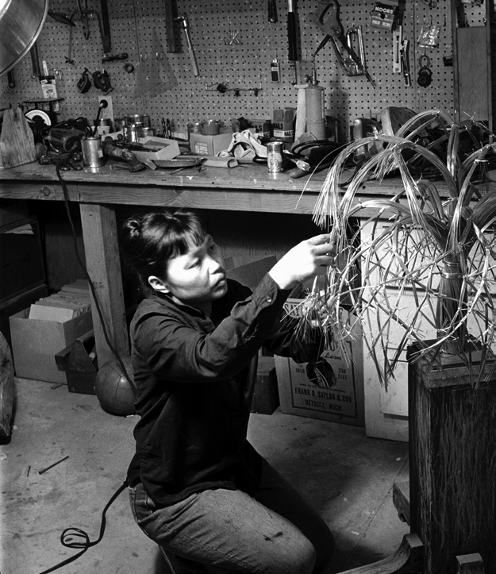

From shot sizes to camera angles, this workshop will introduce you to the rules of filmmaking. Following a guided series of activities, you will deconstruct moving image techniques and styles, and develop your own narratives by using the environment and objects around you. We advise making this page full screen for the duration of the workshop. Click play on the following video to begin!
⥥
⥥
⥥
⥥
(Text version just below!)
The goal of this workshop is to create your own storyboard and produce a series of experimental video shots with your mobile phone.
You have each been given your own zine (a DIY pamphlet) to fill in over the course of your residency. As you scroll down this page during the workshop, you will see various tasks that require you to write, sketch or stick things into your zine. Your zine will not only be helpful to keep all of your ideas in one place, but will act as documentation for your Arts Awards.
Everything you will need for this workshop can be found in your residency pack. At times you may be asked to experiment with things found around your home.
Today is a chance for you to learn about and experiment with filmmaking, whilst considering yourself as a "citizen of the universe", so don't worry if you aren't 100% satisfied with your results at this stage. We don't expect you to be video professionals yet!
At the bottom of this page there is a checklist of everything that you should have completed during this workshop so you can be sure you haven't missed anything!
⥥
⥥
⥥
⥥
What is a "Citizen of the Universe"..?
⥥
⥥
⥥
⥥
RUTH ASAWA: "Citizen of the Universe"
(Text version just below!)
“Art will make people better, more highly skilled in thinking and improving whatever business one goes into, or whatever occupation. It makes a person broader.”
– Ruth Asawa
As a teenager Ruth lived in an American concentration camp as part of the forced relocation and incarceration of Japanese-Americans by the US government on the eve of World War II. Despite this, she learned artistic skills from professional artists there, and left with the firm belief that art can be life changing and a positive force for social good.
Ruth strived for a truly equal and unified society. She believed that we are all connected on a broader level, and that it is only human-made categorisations that divide us. She truly saw herself to be a "Citizen of the Universe".

Ruth Asawa working on a tied-wire sculpture, 1963. Photo by Imogen Cunningham.
Here are some recent big news topics to get you thinking about your own message as a "citizen of the universe".
⥥
⥥
⥥
⥥
⥥
⥥
⥥
⥥
Task 1: Mind Mapping
What are the issues concerning you today? These can be personal, political, environmental. In this task we will be building the subject matter and material for your shots today.
Part. 1 - Go through the newspapers provided and highlight any descriptive or keywords from the articles. Are you interested in exploring any of these topics further?
Part. 2 - Use the mind maps in your zine to visualise your thoughts. You can use any of the headlines or keywords from your articles, and add your own thoughts.
If there is a theme that you are particularly interested in focusing on, use the blank mind maps to explore it further.
Guide time to complete this task: 5-10 mins
⥥
⥥
⥥
⥥
Task 2: Object Collection
Find an object or a series of objects that relate to a few ideas in your mind maps.
**Hint** Think of things that are close to hand, you can't go to the shops so be creative and resourceful with what's around you!
The Environment/Climate Change: rubbish, litter, plants, leaves, twigs, umbrella.
Black Lives Matter: book, placard, phone, fist.
Guide time to complete this task: 5-10 mins
⥥
⥥
⥥
⥥
You now have all the subject matter you need to start experimenting with your camera today.
⥥
⥥
⥥
⥥
Now let's look through some filming techniques before you get started with planning your own shots in the next task...
⥥
⥥
⥥
⥥
Shot Sizes:
Very Long Shot (VLS)
Introduces us to the world (the home/city/landscape)
Hover over image -->
Long Shot (LS)
Takes in and introduces the whole person or object in the environment.
<-- In this case a chair! (Hover over the image!)
Mid Shot (MS)
Film your object from the middle upwards (i.e. waist up!)
Hover over image -->
Close Up
Try and capture as much detail as possible!
<-- Hover over image
A Bonus Note On Lenses:
In addition to using different shot sizes, filmmakers also use various lenses to make the visual effects more pronounced.
For example: the images below show a Very Long Shot (VLS) using a fish-eye lens that captures a large area, and a Close Up shot using a macro lens with a short focal length. This creates a huge contrast between the two shots.
⥥
⥥
⥥
⥥
Camera Angles:
Insert Shot
An Insert Shot focuses the viewer on a specific detail of the scene.
These are particularly welcome during the editing phase as they offer a smooth transition between shots.
Eye Level Shot
The camera is placed at the subject's height as if the subject is looking at the lens.
These shots are very common because they appear neutral.
High Angle Position
The camera is above the subject, looking down.
This makes the object look weak, submissive, or frightened.
Low Angle Position
The camera is placed below the objects 'eyes', looking up at them.
Low angles make objects look dominant, aggressive, or ominous.
Dutch Angle Position
The camera is leant sideways, transforming the horizon into a slope.
The changing of horizontal and vertical lines into diagonal lines creates a dynamic composition.
Over The Shoulder (OTS)
A shot of someone or something taken from the perspective of the shoulder of another person or object.
The back of this person or object frames the image that the camera points towards.
Point Of View (POV)
A method of shooting a scene or film that expresses the attitude of the director or writer towards the characters or objects within the scene.
It is often filmed from eye level, as if from someone's viewpoint.
⥥
⥥
⥥
⥥
Before looking at any more camera techniques, we are going to learn about how we can plan a film that combines multiple shots.
⥥
⥥
⥥
⥥
Storyboarding
What is a Storyboard?
A storyboard is a set of drawings of each individual shot in a film. Every drawing has a small written description of the shot for clarity, detailing the camera movements, shot size and
camera angle. Storyboards help to plan the narrative of a film or performance.
What does a Storyboard do?
It forces you to think about where you might place the camera for each shot.
It shows how those shots might later be cut together to produce a flowing scene.
It’s an effective means of communicating ideas to collaborators.
The Birds, 1963 Director: Alfred Hitchcock, Storyboards by Harold Michelson
⥥
⥥
⥥
⥥
"To enter the more visual mindset of movie-making, all you need is a pen, paper and a dash of imagination." - Matthew Thrift, The Little White Lies Guide to Making Your Own Movies (2017)
⥥
⥥
⥥
⥥
More Camera Techniques: Camera Movements
Pan
The camera swings on its horizontal axis, similar to moving your head from side to side.
Often used to introduce a new character or object.
Tilt
Used to show the vertical space often hidden by the landscape framing of films.
Tracking Shot
The camera is moved to follow the action.
Often the camera is mounted on wheels or a rail track. Skateboards or bikes work too (you could even use your hand if it's a small distance!)
Crane
A mechanical device is used to 'fly' the camera through space.
A stool or chair can be used to achieve a similar effect (be careful!)
Zoom
Used to get nearer to a point of interest in a scene, or for a disorientating effect.
Pull Focus
The focus of the camera is “pulled”, changing the point of interest in space. Often used to move between two characters or objects.
(Not easy to achieve on a phone)
⥥
⥥
⥥
⥥
It is said that the Director Alfred Hitchcock considered a film done and dusted once he’d completed his storyboard, and that he saw shooting the film itself as a mere technicality.
While this may read like a folk tale, the reality is that Hitchcock rarely rushed to get his camera out on set to capture spontaneous moments. Instead, he preferred to stage his shots well in advance of production.
It’s remarkable to see how closely his finished scenes align with his initial concepts.
As you embark on your own storyboard in the next task, remember to think ahead about how you might create these actions in real life afterwards, just like Hitchcock did...
⥥
⥥
⥥
⥥
The Billboard Test: What's Your Digital Footprint?
By this point you are probably ready to jump into the process of creating your own films. But there is just one more thing that we need to run through...
(Text version just below!)
You will be creating digital content that is suited to being posted on the internet's many digital platforms.
However, before posting anything online, you should always think about:
Who might see it - both now and in the future?
What personal information does it give away about you? For example, what school you attend or your home address.
What impression does it give of you?
If you wouldn't want it to appear on a public roadside billboard for all to see, then it's probably not a good idea to share it online!
Remember to bear this in mind as you plan your films - this way you will be able to share your message as a "citizen of the universe" online in the safest way. :)
What would you share on the billboard below?
⥥
⥥
⥥
⥥
Task 3: Storyboard Your Short Film
The Task: Storyboard a short film composed of six shots that examine the objects you selected earlier. Think about how you could use these items to explore the themes and ideas from your mind maps.
Use the template in your zine to create your storyboard.
Example:
**Note** Remember to use a variety of the shot sizes, camera movements and camera angles that we looked at earlier to create a more dynamic visual experience for the viewer. Here they are again as a reminder:
Shot Sizes:
Very Long Shot
Long Shot
Medium Shot
Close Up
Camera Angles:
Insert Shot
Eye Level Position
High Angle Position
Low Angle Position
Dutch Angle Position
OTS (Over the Shoulder)
POV (Point of View)
Camera Movements:
Pan
Tilt
Track
Crane
Zoom
Pull Focus
Guide time to complete this task: 15-20 mins
⥥
⥥
⥥
⥥
Now that you have planned your shots, you will need to think about the equipment available to you today to make them become a reality!
⥥
⥥
⥥
⥥
Filming with a Smartphone:
Nowadays there isn't the need for expensive cameras for filmmaking. Instead, most of us have a mobile phone in our pocket 24/7 that is always primed to record our experiences.
You will most likely already record on your phone with apps such as TikTok and Instagram. However, today you are going to refine your videography skills with a mix of techniques and equipment to professionalise your films.
A handmade pistol grip in action!
Filming Equipment:
For this workshop we are encouraging a DIY approach to making your films. We made pistol grips earlier for hand-held shots, however, if you want to film static shots you will have to improvise the effect of a tripod (unless you happen to own one). Perhaps you could use a stack of books, or take inspiration from one of the creative examples below. Think about what you have around you and get creative!
A more complex rig James made for filming a large object with a birds eye view!
^^ If you happen to own a tripod you can use the phone mount from your pistol grip to mount your phone to the tripod!
Smartphone Filming Techniques:
Film horizontally - if you film holding the smartphone vertically you will get black bars on both sides of the image when editing it later.
Check the background noise (both audio and visual). You don't want someone's discussion ruining your audio track, or someone eating a sandwich in the back of your shot.
Put your phone on aeroplane mode to avoid any distracting notifications while you film.
Use some tape to keep your phone in place when in its holder if necessary. WE DON'T WANT SMASHED PHONES TODAY!
Film your scene for slightly longer than required to give you more space when it comes to editing later.
⥥
⥥
⥥
⥥
Task 4: Follow Your Storyboard and Film Your Objects
Now it’s time to shoot your storyboard. Take your time and have fun - don’t forget this is all about experimenting with your camera!
- Then take screenshots of your video shots and print them out to add into your zine. (If you run out of space in your zine to stick in your screenshots you can staple or paperclip any extra sheets in.)
Remember that Hitchcock said his work was done at the storyboard, and that the filming was just a technicality. So don't be daunted by this task, stick to your storyboard and you can't go far wrong. Enjoy!
Hint: Look at your storyboard. Are there any shots which require the same set up? If so, do those first, then change the set up for the other shots - that way you don’t have to keep going between setups!
Note: Remember the smartphone filming techniques that were just covered.
Guide time to complete this task: 30 mins
⥥
⥥
⥥
⥥
Well done, you have nearly completed this workshop! Before you go, there is one final important bit.
⥥
⥥
⥥
⥥
Post-Production Editing
In task 4 you filmed the individual shots from your storyboard. To transform these into short films you will need to do post-production editing.
Post-production can be as complex as you want it to be, from simple edits on your phone to full teams of professionals working on high-end software.
In the technical sheet you received in your packs we suggested the best free mobile apps for post-production editing. However, if you decide you really enjoy filmmaking, here are some free softwares that you may wish to experiment with in the future. These will need to be downloaded onto a laptop or computer.
Free editing software:
iMovie (Mac)
Movavi (Windows)
Davinci Resolve - a more advanced editor for Windows and Mac.
(Davinci is harder to use and isn't recommended for beginners unless you want a challenge!)
Task 5: Create Your Film!
Using a free app (we suggest iMovie on iPhone and FilmoraGo on Android) edit your clips and turn them into a short film based on your storyboard.
Below is a basic tutorial using iMovie (FilmoraGo has similar functions!) Don’t forget, this is all about experimenting. Just see what you come up with!
Once you have finished creating your film please send it to us. Instructions on how to do this can be found on your technical sheet.
**Important note:** for copyright reasons please avoid using music or sounds from the internet in your films. We will be exploring how to access royalty free music and sounds later this week. For now, if you would like an audio track, please complete the extension task! You can also use any sounds provided by your editing app.
Extension: Create a Simple Accompanying Audio Track for Your Film. As demonstrated in Kate's tutorial, use your filmmaking app to add a simple audio track to your film. Here are some ideas for the content of your audio track:
Reading out your keywords from earlier.
Having a discussion with someone in your household about your objects.
Describing your objects.
Expressing your thoughts and feelings surrounding your objects.
(You may choose to combine multiple points if you like!)
Note: Remember to limit background noise, try to record in a quiet space so the neighbour's dog barking doesn't ruin your audio!
Guide time to complete this task: 20 - 30 mins
Here is a finished example. It is a little longer than required, but it gives you an idea of what's possible. We recommend quality over quantity, a concise 30 second - 1 minute film can be very effective at telling a story.
⥥
⥥
⥥
⥥
Arts Award Checklist:
In order to achieve your Silver Arts Award, you will need to make sure you have completed all of the tasks from today. If you have missed something out, click on the link to revisit the relevant section:


 A handmade pistol grip in action!
A handmade pistol grip in action!